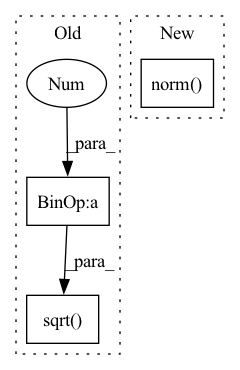

Pattern ID :32051

Before Change
imgRep = np.matmul(P, objPts_w_ex.T).T
imgRep[:, 0] = imgRep[:, 0] / imgRep[:, 2]
imgRep[:, 1] = imgRep[:, 1] / imgRep[:, 2]
error = np.sqrt((imgPts[:, 0] - imgRep[:, 0].reshape((self.n, 1))) ** 2 + (
imgPts[:, 1] - imgRep[:, 1].reshape((self.n, 1))) ** 2)
error = np.sum(error, axis=0) / self.n
return error[0]
After Change
// Normalize the image points
imgRep = imgRep[:, :, :2] / imgRep[:, :, 2:]
error = torch.linalg.norm(imgRep - imgPts, dim=-1)
error = torch.sum(error, dim=-1)
return error
In pattern: SUPERPATTERN
Frequency: 3
Non-data size: 3
Instances
Fragment ID: 93961183
Project Name: pypose/pypose
Commit Name: f93c59c3ad352fe90aa3072311a7ca67fa442243
Time: 2023-02-25
Author: zitongz3@illinois.edu
File Name: pypose/module/pnp.py
M Class Name: EPnP
N Class Name: EPnP
M Method Name: reprojection_error(5)
N Method Name: reprojection_error(4)
M Parent Class:
N Parent Class:
M File Name: pypose/module/pnp.py
N File Name: pypose/module/pnp.py
M Start Line: 456
M End Line: 466
N Start Line: 469
N End Line: 492
'>
Before Change
B[np.arange(N), np.arange(N)] += ratio.sum(dim=1)
// update - double transpose. TODO: consider fix
coords = (1. / N * torch.matmul(best_3d_coords, B))
dis = torch.sqrt((coords ** 2).sum(axis=1)).sum()
if verbose >= 2:
print("it: %d, stress %s" % (i, stress))
// update metrics if relative improvement above tolerance
After Change
B[:, np.arange(N), np.arange(N)] += ratio.sum(dim=-1)
// update - double transpose. TODO: consider fix
coords = (1. / N * torch.matmul(B, best_3d_coords))
dis = torch.norm(coords, dim=(-1, -2))
if verbose >= 2:
print("it: %d, stress %s" % (i, stress))
// update metrics if relative improvement above tolerance
if (best_stress - stress / dis).mean() > tol:
'>
Fragment ID: 93961185
Project Name: lucidrains/alphafold2
Commit Name: 98e16ad2931a27f90e05df940cff72c00074028d
Time: 2021-01-17
Author: ericalcaide1@gmail.com
File Name: utils.py
M Class Name: AnonimousClass
N Class Name: AnonimousClass
M Method Name: mds_torch(5)
N Method Name: mds_torch(5)
M Parent Class:
N Parent Class:
M File Name: utils.py
N File Name: utils.py
M Start Line: 174
M End Line: 205
N Start Line: 181
N End Line: 215
'>
Before Change
B[np.arange(N), np.arange(N)] += ratio.sum(axis=1)
// update - double transpose. TODO: consider fix
coords = (1. / N * np.dot(best_3d_coords, B))
dis = np.sqrt((coords ** 2).sum(axis=1)).sum()
if verbose >= 2:
print("it: %d, stress %s" % (i, stress))
// update metrics if relative improvement above tolerance
After Change
B[np.arange(N), np.arange(N)] += ratio.sum(axis=1)
// update - double transpose. TODO: consider fix
coords = (1. / N * np.dot(best_3d_coords, B))
dis = np.linalg.norm(coords)
if verbose >= 2:
print("it: %d, stress %s" % (i, stress))
// update metrics if relative improvement above tolerance
if(best_stress - stress / dis) > tol:
'>
Fragment ID: 93961186
Project Name: lucidrains/alphafold2
Commit Name: 98e16ad2931a27f90e05df940cff72c00074028d
Time: 2021-01-17
Author: ericalcaide1@gmail.com
File Name: utils.py
M Class Name: AnonimousClass
N Class Name: AnonimousClass
M Method Name: mds_numpy(5)
N Method Name: mds_numpy(5)
M Parent Class:
N Parent Class:
M File Name: utils.py
N File Name: utils.py
M Start Line: 232
M End Line: 233
N Start Line: 242
N End Line: 243